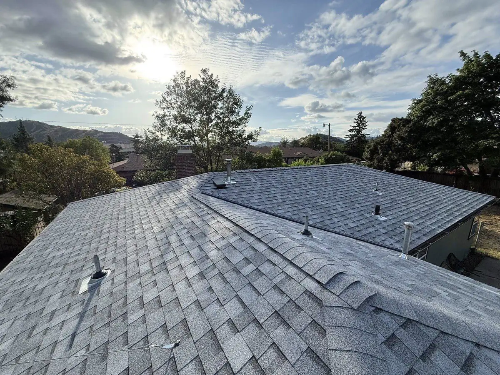

Gutter Guards · Glide, OR
Gutter guards in Glide, for deep-forest needle load and ember debris.
Out where the Little River meets the North Umpqua at Colliding Rivers, Glide homes live under real forest — dense conifers dropping needles all year, more rain than the valley, and a wildfire history that makes debris in the gutter a genuine concern. We install non-combustible micro-mesh guards built for it.
⚡ Quick answer
In Glide, the gutter guard that works is fine stainless micro-mesh — and it does double duty here. Glide sits in dense forest along the North Umpqua, so homes get a heavy year-round fir and pine needle load plus more rain and occasional snow than the valley. Micro-mesh sheds needles that defeat screens and foam, and because it's non-combustible it also keeps dry, flammable debris out of the trough — one layer of a wildfire-ready roof after the 2020 Archie Creek Fire. We fit it to your existing gutters after cleaning and repair.
Local Knowledge
Forest living, forest-sized gutter debris.
Glide sits east of Roseburg up the North Umpqua Highway (138), near the famous Colliding Rivers where the Little River meets the North Umpqua head-on. This is the edge of the deep timber country, and the canopy over Glide rooflines is thick Douglas fir and pine. That means a heavy needle load in every season — the fine, wind-borne kind that slips through most "leaf guards" and knits into a water-holding mat.
Two things set Glide apart from the valley towns. First, more precipitation: sitting higher and farther east, Glide typically gets more rain than Roseburg's roughly 33 inches, plus occasional snow. Second, wildfire. The 2020 Archie Creek Fire tore through the North Umpqua corridor around Glide, and homeowners here now think hard about the dry needle litter that collects at a roofline. A non-combustible stainless micro-mesh guard keeps that fuel out of the gutter — a real, if partial, contribution to a wildfire-ready home.
- Dense forest canopy — one of the heaviest needle loads in the county, year-round
- Higher rain and some snow — precipitation that punishes any clogged run
- Wildfire debris concern — non-combustible mesh keeps dry litter out of the trough
- Steep, wooded, rural lots — where wet or icy ladder cleaning is genuinely dangerous
Guards need a sound gutter, so this pairs with gutter cleaning and repair. For the fire side, see our guides on wildfire-resistant roofing and smoke, ash, and your gutters.

Straight Talk
What holds up on a Glide forest roof.
Stainless micro-mesh — essential
Sheds a heavy needle load and is non-combustible. The right guard for deep-forest, fire-aware Glide homes.
Screens & perforated covers
Needles thread straight through under this canopy. Not a serious choice for a Glide roofline.
Foam & brush inserts
They hold needles and moisture — and dry debris is exactly the fuel you don't want at the roof. We skip them.
Clean, repair, then guard
Heavy forest debris means a thorough clean and repair first, then guards fastened without disturbing your shingles.
This Season's Offer
A new roof can bring free gutters and guards.
Every new roof gets $500 off right now, and qualifying roofs ($20k+) include a free whole-home gutter install — worth serious thought on a forest lot. Because even micro-mesh wants an occasional brush-off, the Home Care Membership (from $49/month) folds a gutter and valley check into your annual inspection with a photo report — valuable where fire-season cleanup matters. Prepping the roof? See our Oregon rain gutter guide and wildfire roofing guide.
Questions
Glide gutter guard FAQs
What guards work in Glide?
Stainless micro-mesh, and it matters most here. The dense conifer canopy rains needles all year, and only tight mesh sheds them where screens and foam fail.
Do guards help with wildfire embers?
They help. Non-combustible micro-mesh keeps dry needle litter out of the trough, reducing fine fuel at your roofline. It's one layer of a wildfire-ready roof, not a substitute for Class A roofing and cleanup.
Does Glide get more rain and snow?
Generally yes — higher and farther east than Roseburg, so more precipitation than its ~33 inches, plus occasional snow. Clear-draining gutters matter more here.
How far is your crew?
Roughly an hour from our Riddle shop, east of Roseburg on Highway 138. We serve the North Umpqua corridor as a local family-owned crew. Oregon CCB #255729.
Nearby Towns
Gutter guards across Douglas County.
Same crew, same micro-mesh standard, from the North Umpqua to the valley.
Glide, keep the forest out of your gutters.
Free, honest gutter-guard advice for forest-country homes.